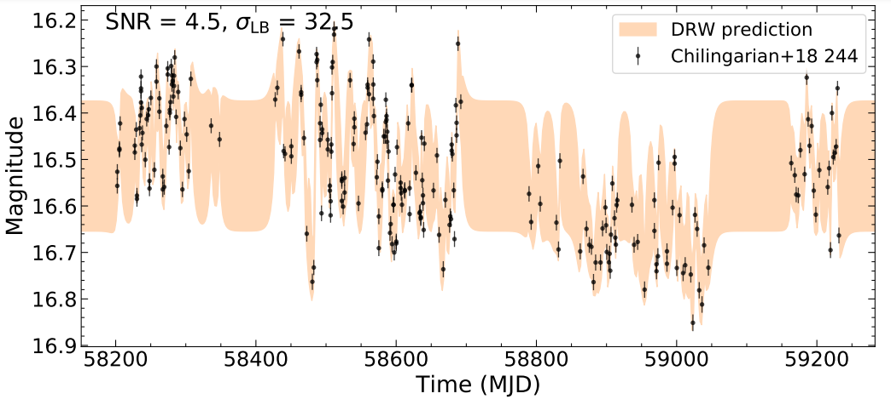

Research
My ORCID can be found herehere. I am currently working with
Professor Xin Liu at the University of Illinois, and previously with Professor Tjonnie Li at the Chinese University
of Hong Kong. My research interests lie in the fields of black hole and extragalactic observational astronomy.
Research Experiences
University of Illinois at Urbana-Champaign
(Dec. 2020 - Present)
w/ Prof. Xin Liu & Colin Burke
Intermediate Mass Black Holes (IMBHs) are thought to be the 'seeds' of supermassive black holes such as the one
foubd at the center of our own Milky Way galaxy, but they have been extremely challenging to find. State-of-the-art
astronomical surveys have finally started to discover some candidates, but we still lack an efficient and robust method
to measure their masses down to the lowest mass scales possible. We have been developing a new black hole mass weighing
method that may work even down to the scale of stellar mass black holes. This is very exciting, but we need to test it
with a significant sample of known candidates of IMBHs.

I have been working with Colin Burke on testing a relationship between active galactic nuclei (AGN) optical
variability timescales and AGN masses. More information about this relationship can be found
here. This mass-timescale correlation holds up for both supermassive
black holes (107 - 1010M☉) and
white dwarfs (~1M☉), motivating
us to test its efficacy for weighing black holes closer to the IMBH mass range
(102 - 105M☉). To this end, I:
- Dolor pulvinar etiam etiam.
- Sagittis adipiscing eleifend.
- Felis enim dolore viverra.
- Dolor pulvinar etiam etiam.